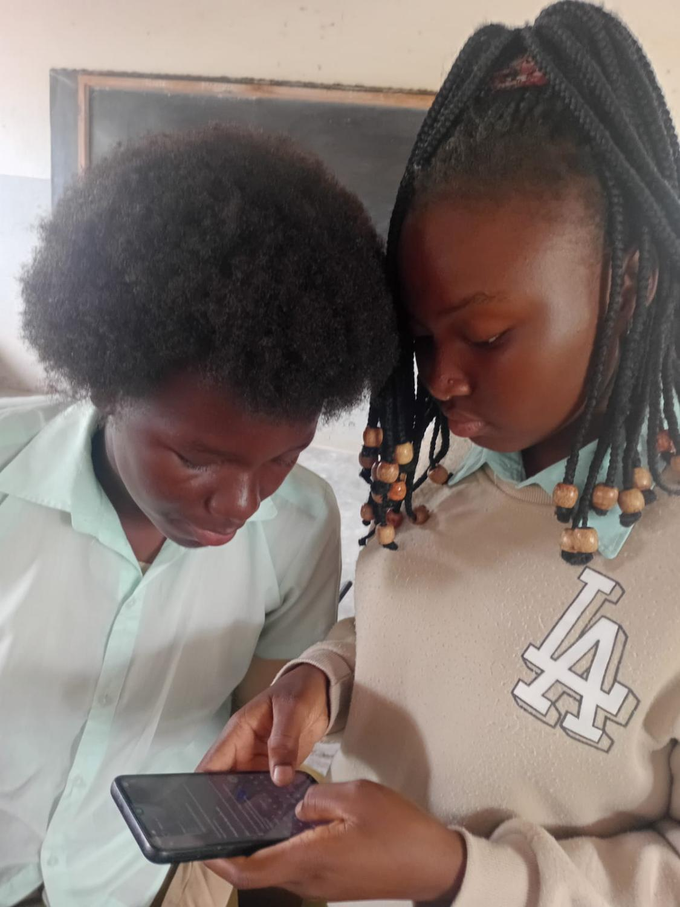

Contextualização e importância do tema no ambiente escolar
As redes sociais (Facebook, Instagram, TikTok, WhatsApp, YouTube e outras) tornaram-se parte integrante da vida dos jovens. Na escola, o telemóvel é usado diariamente – às vezes para estudar, mas muitas vezes para conversar, ver vídeos e navegar sem limite de tempo.
Este uso constante influencia directamente a concentração, a qualidade do sono, o tempo dedicado aos trabalhos de casa e, consequentemente, o desempenho escolar. Em muitas salas de aula é comum ver alunos a olhar para o ecrã em vez de prestar atenção à lição.

Alunos a interagir com o telemóvel na escola